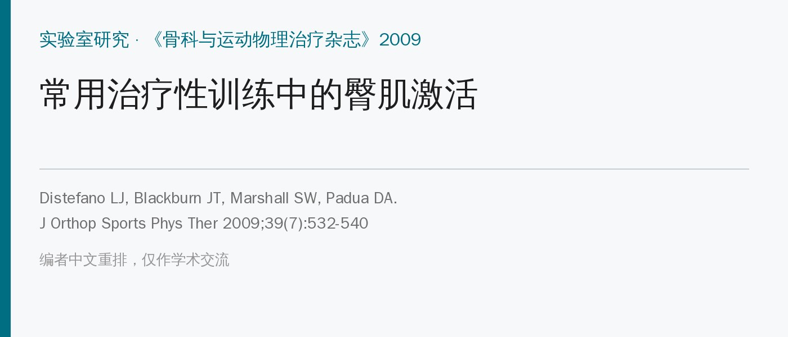
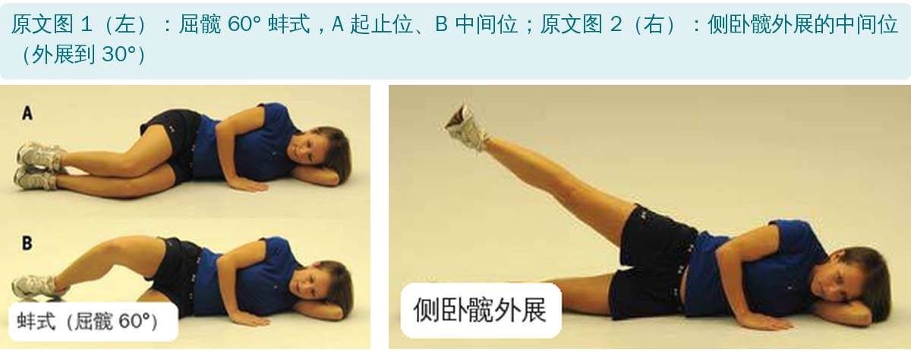
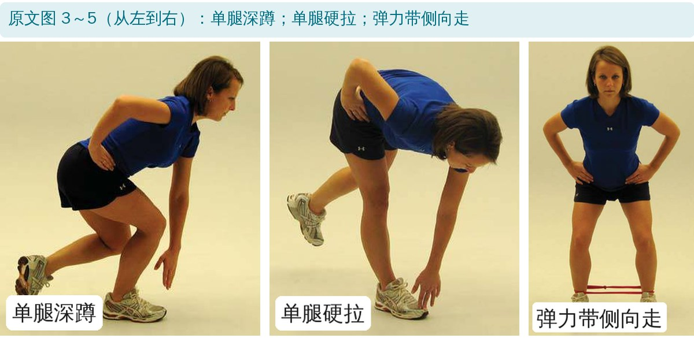
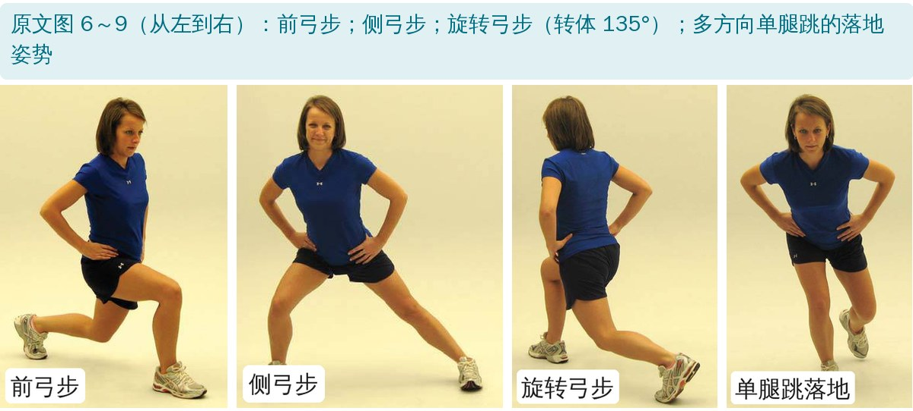
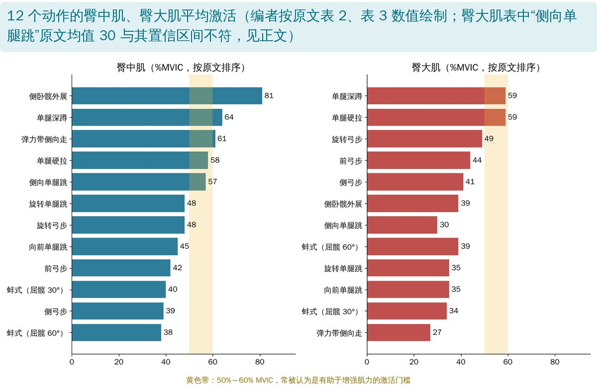

🔖原文信息（编者中文重排）
📚 文献信息
▪ Distefano LJ, Blackburn JT, Marshall SW, Padua DA. Gluteal muscle activation during common therapeutic exercises. J Orthop Sports Phys Ther. 2009;39(7):532-540. doi:10.2519/jospt.2009.2796
▪ 作者来自美国北卡罗来纳大学教堂山分校，由美国国家运动医学学会资助
▪ 研究类型：实验室研究（表面肌电），21 名健康、规律运动的年轻人
臀肌无力与髌股疼痛、髂胫束摩擦综合征、前交叉韧带损伤、慢性踝不稳都有关联，可能通过髋内收内旋、动态膝外翻增加关节负荷。预防和康复方案里练臀肌的动作很多，但哪个动作真正让臀肌“干活”，客观数据很少，已有研究也多集中在早期的简单动作。
这项研究把 12 个只用自重、弹力带或肢体重量的常用动作放在一起比较，从卧位到单腿负重、弓步、单腿跳都有，场地里就能做。
• 受试者：21 人（男 9、女 12，平均 22 岁），每周至少运动 3 天、每次 60 分钟，无前交叉韧带损伤史，近 2 年无下肢手术
• 测量：表面肌电测优势侧臀大肌（第 2 骶椎与大转子连线的 1/3 处）和臀中肌（大转子与髂嵴连线、距大转子 1/3 处）；电子角度计监测膝角度，足底开关识别着地
• 节奏：除单腿跳外，节拍器每分钟 60 拍，下降 2 秒、上升 2 秒；单腿跳落地后稳住 3 秒，只分析落地后的 3 秒
• 参照：做完所有动作后测最大自主等长收缩（臀大肌：俯卧屈膝 90° 伸髋；臀中肌：侧卧外展 25°），结果以 %MVIC 表示；每个动作做 8 次，取中间 4 次

🔖原文图 1、2：蚌式和侧卧髋外展

🔖原文图 3～5：单腿深蹲、单腿硬拉、弹力带侧向走

🔖原文图 6～9：三个方向的弓步和单腿跳
• 蚌式：侧卧，屈膝 90°，屈髋 60° 或 30°，两脚跟并拢，上方膝打开，骨盆朝前不转
• 侧卧髋外展：伸膝，髋中立位，外展到 30°再慢慢放下，胫骨和股骨保持中立不旋转
• 单腿深蹲：单腿站，膝髋微屈约 30°，双手叉腰，下蹲到对侧中指能碰到支撑脚外侧，膝对脚尖
• 单腿硬拉：单腿站，膝保持屈 30°，屈髋屈躯干，用对侧中指碰支撑脚旁的地面
• 弹力带侧向走：弹力带绑踝，屈膝屈髋 30°，优势腿领先侧跨到肩宽的 130%，单腿站稳后另一腿跟上，脚尖朝前
• 弓步：前、侧、旋转（以非优势腿为轴转 135°）三个方向，优势腿屈膝屈髋到 90°，躯干直立
• 单腿跳：非优势腿起跳、优势腿落地，跳半个身高的距离，向前、侧向、旋转 135° 三个方向，落地尽量轻，稳住 3 秒

🔖12 个动作的肌电排名
| 动作 | 均值 ± 标准差 | 95% 置信区间 |
|---|---|---|
| 侧卧髋外展 | 81 ± 42 | 62～101 |
| 单腿深蹲 | 64 ± 24 | 53～75 |
| 弹力带侧向走 | 61 ± 34 | 46～76 |
| 单腿硬拉 | 58 ± 25 | 47～70 |
| 侧向单腿跳 | 57 ± 35 | 41～73 |
| 旋转单腿跳* | 48 ± 25 | 37～59 |
| 旋转弓步* | 48 ± 21 | 38～57 |
| 向前单腿跳* | 45 ± 21 | 38～57 |
| 前弓步*† | 42 ± 21 | 33～52 |
| 蚌式（屈髋 30°）* | 40 ± 38 | 23～57 |
| 侧弓步*† | 39 ± 19 | 30～47 |
| 蚌式（屈髋 60°）*† | 38 ± 29 | 25～51 |
原文表 2：臀中肌平均激活（%MVIC）。* 与侧卧髋外展有显著差异；† 与单腿深蹲有显著差异
| 动作 | 均值 ± 标准差 | 95% 置信区间 |
|---|---|---|
| 单腿深蹲 | 59 ± 27 | 47～72 |
| 单腿硬拉 | 59 ± 28 | 46～71 |
| 旋转弓步 | 49 ± 20 | 39～58 |
| 前弓步 | 44 ± 23 | 33～54 |
| 侧弓步 | 41 ± 20 | 32～50 |
| 侧卧髋外展 | 39 ± 18 | 31～47 |
| 侧向单腿跳 | 30 ± 19 | 31～48 |
| 蚌式（屈髋 60°） | 39 ± 34 | 24～54 |
| 旋转单腿跳*† | 35 ± 16 | 28～43 |
| 向前单腿跳*† | 35 ± 22 | 25～45 |
| 蚌式（屈髋 30°）*† | 34 ± 27 | 21～46 |
| 弹力带侧向走*†‡ | 27 ± 16 | 20～35 |
原文表 3：臀大肌平均激活（%MVIC）。* 与单腿深蹲有显著差异；† 与单腿硬拉有显著差异；‡ 与旋转弓步有显著差异
• 侧卧髋外展最高（81%），显著高于两种蚌式、三种弓步、向前和旋转单腿跳
• 前五名（侧卧外展、单腿深蹲、弹力带侧向走、单腿硬拉、侧向单腿跳）都超过 50%，作者称为“上层”，它们都直接用到臀中肌的外展或额状面骨盆稳定功能
• 侧卧外展之所以最高：伸膝时整条腿的力臂最长，而且整条腿都要自己抬，蚌式则有一部分重量靠下面的腿支撑
• 不能负重的患者也能有效练臀中肌：侧卧外展就够用
• 蚌式屈髋 30° 和 60° 对臀中肌激活差不多，在这个范围内屈髋角度不重要
• 三种弓步都在下层：双脚着地相对稳定，骨盆不需要太多额状面稳定
• 单腿深蹲和单腿硬拉最高（都是 59%），显著高于弹力带侧向走、屈髋 30° 蚌式、向前和旋转单腿跳
• 这两个动作同时需要腰骨盆稳定、单腿平衡、离心控制屈髋和向心伸髋，正好是臀大肌的主要功能
• 弓步有中等激活（41%～49%），旋转弓步最高；单腿跳落地以稳定和离心为主，激活反而偏低
• 蚌式没有特别激活臀大肌：屈髋时臀大肌的外旋力臂变小，作者推测髋中立位做外旋可能更好，但没测
一般认为激活超过 50%～60% MVIC 才有利于增强肌力。按这个门槛，单腿深蹲和单腿硬拉同时“练到”臀中肌和臀大肌；侧卧外展、弹力带侧向走、侧向单腿跳也让臀中肌过了门槛。加负重还能进一步提高激活。
| 动作 | 臀中肌 ICC | 臀中肌 SEM | 臀大肌 ICC | 臀大肌 SEM |
|---|---|---|---|---|
| 侧卧髋外展 | 0.98 | 7 | 0.94 | 5 |
| 蚌式（屈髋 30°） | 0.98 | 6 | 0.95 | 7 |
| 蚌式（屈髋 60°） | 0.97 | 6 | 0.98 | 5 |
| 单腿深蹲 | 0.95 | 8 | 0.93 | 7 |
| 单腿硬拉 | 0.95 | 8 | 0.95 | 7 |
| 弹力带侧向走 | 0.96 | 8 | 0.93 | 5 |
| 前弓步 | 0.91 | 6 | 0.91 | 8 |
| 侧弓步 | 0.91 | 6 | 0.85 | 9 |
| 旋转弓步 | 0.93 | 7 | 0.95 | 5 |
| 向前单腿跳 | 0.37 | 41 | 0.42 | 30 |
| 侧向单腿跳 | 0.55 | 30 | 0.21 | 35 |
| 旋转单腿跳 | 0.56 | 35 | 0.27 | 22 |
原文表 1：各动作的组内信度（ICC：组内相关系数；SEM：测量标准误，单位 %MVIC）
• 健康年轻人：髌股疼痛、前交叉韧带损伤等患者的激活模式可能不同
• 单腿跳的结果不可靠：其他动作的组内相关系数 0.85～0.98，三种单腿跳只有 0.21～0.56，测量误差达 22%～41% MVIC
• 表面肌电有串扰：臀中肌电极可能混入阔筋膜张肌和臀小肌信号
• “激活高 = 练得强”只是假设：没有做训练干预验证肌力是否真的提高
• 臀大肌缺少非负重伸髋动作，无法比较负重与非负重的差别
• 两两比较方法偏保守：以置信区间完全不重叠判断显著，没有做正式的事后检验
• 臀大肌表里一个均值落在置信区间外：侧向单腿跳写成 30 ± 19，95% 置信区间却是 31～48，均值不可能在区间之外；排序也夹在 39 和 39 之间，原值很可能是 39
• 另一个区间对不上：臀中肌表中向前单腿跳均值 45，区间 38～57 与旋转弓步（均值 48）完全相同，区间中点是 47.5，疑为复制错误
• 方差分析自由度不对：12 个动作、21 人，分子自由度应为 11，原文却是 F(5,90) 和 F(5,95)；两块肌肉的分母自由度还不一样，正文也没说明做过什么校正
• 摘要与表格不一致：单腿深蹲臀中肌摘要写 64 ± 25，表 2 写 64 ± 24
• “上层”的划分依据：说前五名与其余动作相差 10%，但第五名侧向单腿跳（57）与第六名（48）只差 9
• 小错：P 值的“<”号在原文中丢失（如“P .0001”）；讨论中“eccentric control of concentric hip flexion”语义不通
• 臀中肌：先侧卧外展，再单腿负重——不能负重时侧卧外展就很有效，能负重后进阶单腿深蹲、单腿硬拉、弹力带侧向走
• 臀大肌：单腿深蹲和单腿硬拉，两块臀肌一起练，效率高
• 蚌式和弓步激活中等，适合早期或作为过渡，别指望靠它们“唤醒”臀大肌
• 动作质量是前提：膝对脚尖、骨盆不旋转、慢速 2 秒下 2 秒上
• 想进一步提高激活：加负重或弹力带阻力；单腿跳更适合练落地控制，而不是单纯的臀肌力量
欢迎关注骨科康复小黄公众号，获取更多物理治疗的专业知识！
📄参考文献：
Distefano LJ, Blackburn JT, Marshall SW, Padua DA. Gluteal muscle activation during common therapeutic exercises. J Orthop Sports Phys Ther. 2009;39(7):532-540. doi:10.2519/jospt.2009.2796
原文版权：© 2009 Journal of Orthopaedic & Sports Physical Therapy，保留所有权利，未采用开放许可协议。本文为学术交流用的中文解读：原文图 1～9 照片直接引用并加中文标签，表 2、表 3 为中文翻译，柱状图按原文数值绘制。版权归原作者与期刊，如有侵权请联系删除。